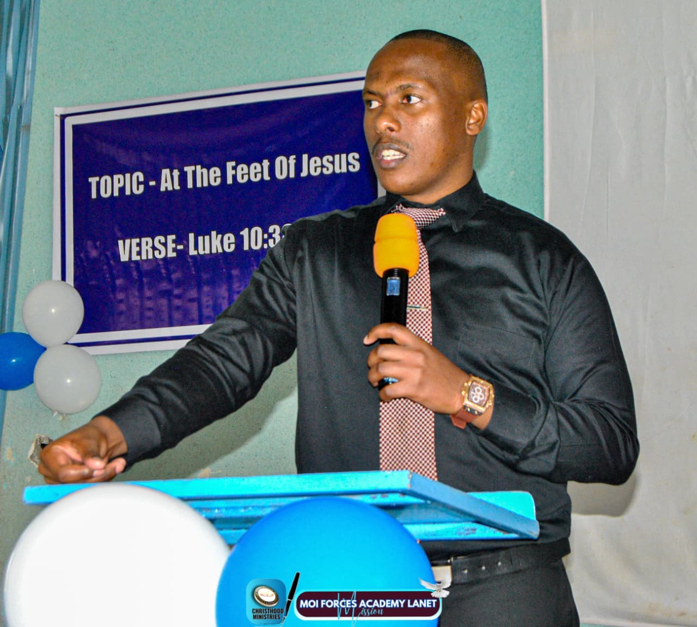

Captain Kago
Worship Ministry and Media Team Head
Leaders were first faithful followers; and that's been my meritorious case. Joining this covenantal House called CIOM over 10 years ago, my distinct honour was just to be a son in the house, pursuing the glorious God who was tangibly a heavy precipitate over them I had seen proceed from here...

Sir Gee
Missions Head and Intercessory Leader
Christhood has been and will forever be, for me and many others, a place of growth. I like how it is intentionally fashioned to allow people to grow. The opportunities and avenues are there, you just need to be deliberate in your all-round growth...

Ma'am Daisy Vincent
Protocol, Hospitality & Ushering Head
My journey in Christhood has been nothing short of transformative. It has given me the chance to embrace my unique gifts and talents in service to others while deepening my own spiritual path...
Maureen Kosen
Ladies Ministry
I believe that stewardship is the essence of true leadership. Recognizing that I have been entrusted with guiding this generation, I am committed to seeking divine guidance in all my endeavors...
Sir Cliff
Men's Ministry
My leadership journey often feels like a roller coaster, filled with highs and lows, successes and setbacks, and constant changes that demand adaptation...

Sir John
Administrator
As an administrator in Christhood, I see my role as a steward of the vision and mission entrusted to us by God...
Jacqui
Creative Arts Head
Being a leader in Christhood is an honour and quite so humbling...Where I get to give in an area am sooooo passionate about and with time God gave me a people like minded and willing...
Esther Gathoni
Counseling Department
Counseling in Christhood is a ministry of healing, guidance, and restoration. I believe that every person carries a God-given potential...